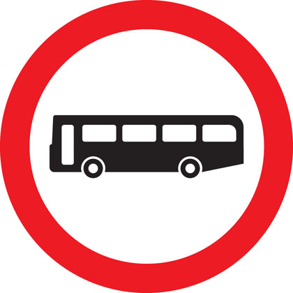
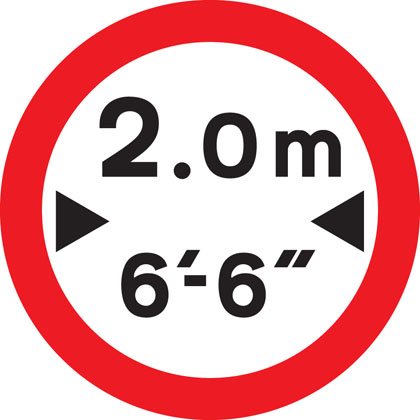
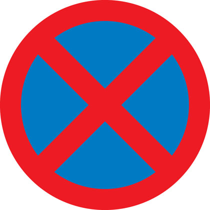
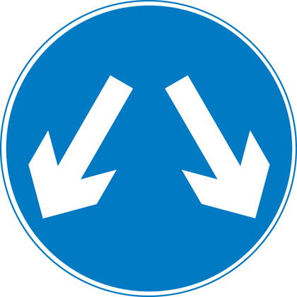
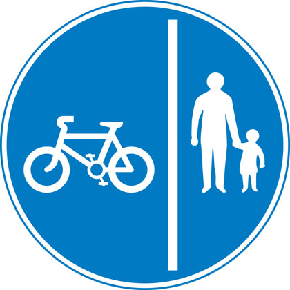
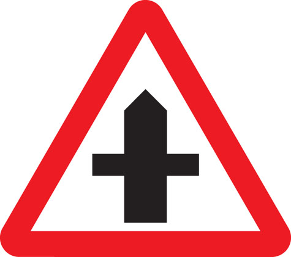
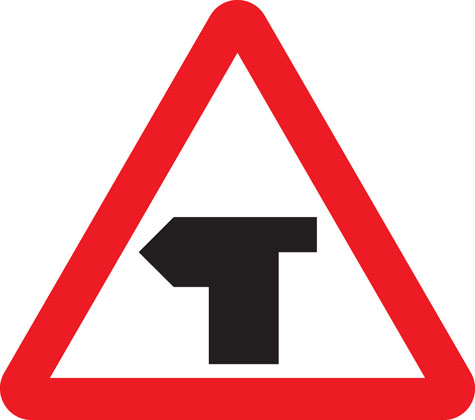
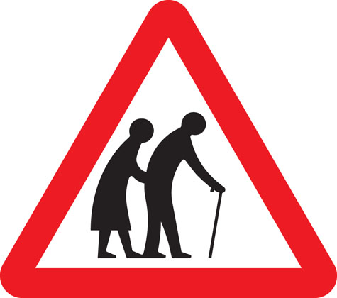

4. Traffic signs 交通標誌
Traffic signs used, including signs giving orders, warning signs, direction signs, information signs and road works signs.
使⽤的交通標誌包括命令標誌、警告標誌、⽅向標誌、資訊標誌和道路⼯程標誌。
Although The Highway Code shows many of the signs commonly in use, a comprehensive explanation of our signing system is given in the Department's booklet Know Your Traffic Signs, which is on sale at booksellers. The booklet also illustrates and explains the vast majority of signs the road user is likely to encounter.
儘管《公路法規》顯⽰了許多常⽤的標誌，但交通部的⼩冊⼦《了解你的交通標誌》中對我們的標誌系統進⾏了全⾯的解釋，該⼩冊⼦在書店有售。該⼩冊⼦還說明並解釋了道路使⽤者可能遇到的絕⼤多數標誌。
The signs illustrated in The Highway Code are not all drawn to the same scale. In Wales, bilingual versions of some signs are used including Welsh and English versions of place names. Some older designs of signs may still be seen on the roads.
《公路法規》中所⽰的標誌並非全部以相同比例繪製。在威爾⼠，使⽤⼀些標誌的雙語版本，包括威爾⼠語和英語版本的地名。⼀些較舊設計的標誌仍然可以在道路上看到。
(*此章節篇幅較長, 您可按下方書籤 快速選讀不同部分)
I. SIGNS GIVING ORDERS 發出命令的標誌
I(a). Signs with red circles are mostly prohibitive. Plates below signs qualify their message.
帶有紅⾊圓圈的標誌⼤多是禁⽌的。標誌下⽅的板塊限定了他們的訊息。

Entry to 20 mph zone
進入 20 英⾥/⼩時區域

End of 20 mph zone
20 英⾥每⼩時區域結束

Maximum speed 最⼤速度

National speed limit applies
適⽤國家限速

School crossing patrol 學校路⼝巡邏

Stop and give way 停⾞並讓路

Give way to traffic on major road
給主要道路上的交通讓路

Manually operated temporary STOP and GO signs
⼿動操作的臨時 STOP 和 GO 標誌

Manually operated temporary STOP and GO signs
⼿動操作的臨時 STOP 和 GO 標誌

No entry for vehicular traffic
禁⽌⾞輛通⾏

No vehicles except bicycles being pushed
除⾃⾏⾞外禁⽌其他⾞輛推⾏

No cycling 禁⽌騎⾃⾏⾞

No motor vehicles 汽⾞禁⾏

No buses (over 8 passenger seats)
禁⽌巴⼠(超過 8個乘客座位)

No overtaking 禁⽌超⾞

No towed caravans 禁⽌拖曳的⼤篷⾞

No vehicles carrying explosives
禁⽌攜帶爆炸物的⾞輛

No vehicle or combination of vehicles over length shown
未顯⽰超過⻑度的⾞輛或⾞輛組合

No vehicles over height shown
未顯⽰超過⾼度的⾞輛

No vehicles over width shown
未顯⽰超過寬度的⾞輛

Give priority to vehicles from opposite direction
對向⾞輛優先
No right turn 不可右轉

No left turn 禁⽌左轉彎

No U-turns 禁⽌掉頭

No goods vehicles over maximum gross weight shown (in tonnes) except for loading and unloading
除裝卸外，貨⾞不得超過所⽰最⼤總重 (以噸為單位)

No vehicles over maximum gross weight shown (in tonnes)
未顯⽰超過最⼤總重的⾞輛 (以噸為單位)

Parking restricted to permit holders
僅限許可證持有者停⾞

No stopping during period indicated except for buses
除巴⼠外，指定期間不得停⾞

No stopping during times shown except for as long as necessary to set down or pick up passengers
除上下乘客所需的時間外，所⽰時間內不得停⾞

No waiting 無需等待

No stopping (Clearway) 禁⽌停⾞ (暢通無阻)
I(b). Signs with blue circles but no red border mostly give positive instruction.
帶有藍⾊圓圈但沒有紅⾊邊框的標誌⼤多給出積極的指⽰。

Ahead only 僅向前

Turn left ahead (right if symbol reversed)
向前左轉 (如果符號相反則右轉)

Turn left (right if symbol reversed)
左轉 (如果符號相反則右轉)

Keep left (right if symbol reversed)
保持向左⾏駛 (如果符號相反則向右⾏駛)

Vehicles may pass either side to reach same destination
⾞輛可以透過任⼀側到達同⼀⽬的地

Mini-roundabout (roundabout circulation - give way to vehicles from the immediate right)
迷你環島 (環島循環 - 讓路給右邊的⾞輛)

Route to be used by pedal cycles only
僅供踏板⾃⾏⾞使⽤的路線

Segregated pedal cycle and pedestrian route
隔離踏板⾃⾏⾞道和步道
Minimum speed 最低速度

End of minimum speed 最低速度結束

Buses and cycles only 限巴⼠和⾃⾏⾞

Trams only 限電⾞
Pedestrian crossing point over tramway
電⾞軌道上的⾏⼈過路處

One-way traffic (note: compare circular 'Ahead only' sign)
單向交通 (註：比較圓形「僅限前⽅」標誌)

With-flow bus and cycle lane
順流巴⼠及⾃⾏⾞道

Contra-flow bus lane 逆流巴⼠專⽤道
With-flow pedal cycle lane
帶流量踏板⾃⾏⾞道
II. WARNING SIGNS 警告標誌
Mostly triangular 多為三⾓形

Distance to ‘STOP’ line ahead
前⽅「停⽌」線的距離

Dual carriageway ends 雙⾞道末端
Road narrows on right (left if symbol reversed)
道路右側變窄 (如果符號相反則左側變窄)

Road narrows on both sides
道路兩側變窄

Distance to ‘Give Way’ line ahead
前⽅「讓路」線的距離

Crossroads ⼗字路⼝

Junction on bend ahead 前⽅彎道交會處

T-junction with priority over vehicles from the right
T字路⼝優先於右側⾞輛

Staggered junction 交錯連接處

Traffic merging from left ahead
前⽅⾞輛從左側匯入
The priority through route is indicated by the broader line.
通過路線的優先順序由較寬的線表⽰。

Double bend first to left (symbol may be reversed)
先向左雙彎 (符號可能顛倒)

Bend to right (or left if symbol reversed)
向右彎曲 (如果符號相反則向左彎曲)

Roundabout 迴旋處

Uneven road 前面路面不平
Plate below some signs ⼀些標誌下⾯的牌
(註:此牌意思 - 請立刻減速)

Two-way traffic crosses one-way road
雙向交通穿越單向道路

Two-way traffic straight ahead
雙向交通直⾏

Opening or swing bridge ahead
前⽅有開⼝橋或平轉橋

Low-flying aircraft or sudden aircraft noise
低空⾶⾏的⾶機或突發的⾶機噪⾳

Falling or fallen rocks
前面可能有石塊或有石塊下墜

Traffic signals not in use
交通號誌未使⽤

Traffic signals 交通號誌

Slippery road 濕滑路⾯

Steep hill downwards 前面有向下斜路

Steep hill upwards 前面有向上斜路
Gradients may be shown as a ratio i.e. 20% = 1:5
梯度可以顯⽰為比率，即 20% = 1:5

Tunnel ahead 前⽅隧道
Trams crossing ahead 前⽅有軌電⾞穿過

Level crossing with barrier or gate ahead
前⽅有障礙物或⼤⾨的平交道

Level crossing without barrier or gate ahead
前⽅沒有障礙物或⼤⾨的平交道

Level crossing without barrier
平交道無障礙物

School crossing patrol ahead (some signs have amber lights which flash when crossings are in use)
前⽅學校過路巡邏 (有些標誌上有琥珀⾊燈光，使⽤過路時會閃爍)

Frail (or blind or disabled if shown) pedestrians likely to cross road ahead
⾝體虛弱 (或失明或殘疾，如顯⽰) 的⾏⼈可能會穿過前⽅的⾺路

Pedestrians in road ahead
前⽅道路上的⾏⼈

Zebra crossing 斑⾺線

Overhead electric cable; plate indicates maximum height of vehicles which can pass safely
架空電纜；水牌上標⽰了⾞輛能夠安全通過的最⼤⾼度

Available width of headroom indicated
指⽰淨空的可⽤寬度

Sharp deviation of route to left (or right if chevrons reversed)
路線急劇向左偏離 (如果 V 字形反轉則向右偏離)

Light signals ahead at level crossing, airfield or bridge
平交道、機場或橋樑前⽅的燈號

Miniature warning lights at level crossings
平交道的微型警⽰燈

Cattle ⽜

Wild animals 野⽣動物

Wild horses or ponies 野⾺或⼩⾺

Accompanied horses or ponies
陪伴的⾺或⼩⾺

Cycle route ahead 前⽅騎乘路線

Risk of ice 結冰風險

Traffic queues likely ahead
前⽅可能會出現交通擁堵

Distance over which road humps extend
路拱延伸的距離

Other danger; plate indicates nature of danger
其他危險；水牌表明危險的性質

Soft verges 軟邊緣

Side winds 側風

Hump bridge 駝峰橋

Worded warning sign 文字警告標誌

Quayside or river bank 碼頭邊或河岸

Risk of grounding 接地風險
III. DIRECTION SIGNS 方向標誌 (Mostly rectangular 多為⻑⽅形)
III(a). Signs on motorways - blue backgrounds
⾼速公路上的標誌 - 藍⾊背景

At a junction leading directly into a motorway (junction number may be shown on a black background)
在直接通往⾼速公路的路⼝ (路⼝號可能會顯⽰在⿊⾊背景上)

On approaches to junctions (junction number on black background)
通往路⼝的道路 (⿊⾊背景上的路⼝編號)

Route confirmatory sign after junction
路⼝後的路線確認標誌

Downward pointing arrows mean ‘Get in lane’ The left-hand lane leads to a different destination from the other lanes.
向下的箭頭表⽰ '進入⾞道' 左側⾞道通往與其他⾞道不同的⽬的地。

The panel with the inclined arrow indicates the destinations which can be reached by leaving the motorway at the next junction
帶有傾斜箭頭的⾯板表⽰在下⼀個路⼝離開⾼速公路即可到達的⽬的地
III(b). Signs on primary routes - green backgrounds
主要路線上的標誌 - 綠⾊背景
Blue panels indicate that the motorway starts at the junction ahead. Motorways shown in brackets can also be reached along the route indicated. White panels indicate local or non-primary routes leading from the junction ahead. Brown panels show the route to tourist attractions. The name of the junction may be shown at the top of the sign. The aircraft symbol indicates the route to an airport. A symbol may be included to warn of a hazard or restriction along that route.
藍⾊⾯板表⽰⾼速公路從前⽅的路⼝開始。 也可以沿著所⽰路線到達括號中所⽰的⾼速公路。⽩⾊⾯板表⽰從前⽅路⼝通往的本地或非主要路線。 棕⾊⾯板顯⽰前往旅遊景點的路線。 路⼝的名稱可能會顯⽰在標誌的頂部。 ⾶機符號表⽰前往機場的路線。 可能會包含⼀個符號來警告該路線上的危險或限制。

On approaches to junctions
關於通往路⼝的⽅法

At the junction 在路⼝

Route confirmatory sign after junction
路⼝後的路線確認標誌

On approaches to junctions
關於通往路⼝的⽅法

On approach to a junction in Wales (bilingual)
前往威爾斯路⼝的⽅式 (雙語)

Primary route forming part of a ring road
構成環路⼀部分的主要路線

Primary route forming part of a ring road
構成環路⼀部分的主要路線
III(c). Signs on non-primary and local routes - black borders
非主要和地⽅路線上的標誌 - ⿊⾊邊框
Green panels indicate that the primary route starts at the junction ahead. Route numbers on a blue background show the direction to a motorway. Route numbers on a green background show the direction to a primary route.
綠⾊⾯板表⽰主要路線從前⽅的路⼝開始。藍⾊背景上的路線編號顯⽰通往⾼速公路的⽅向。綠⾊背景上的路線編號顯⽰主要路線的⽅向。

On approaches to junctions
關於通往路⼝的⽅法

On approaches to junctions
關於通往路⼝的⽅法

At the junction 在路⼝

Direction to toilets with access for the disabled
前往設有殘障通道的廁所的路線
III(d). Other direction signs 其他⽅向標誌

Picnic site 野餐地點

Ancient monument in the care of English Heritage
英國遺產保護中的古老紀念碑

Direction to a car park
前往停⾞場的路線

Tourist attraction 旅遊景點

Direction to camping and caravan site
前往露營地和⼤篷⾞營地的路線

Advisory route for lorries
貨⾞諮詢路線

Route for pedal cycles forming part of a network
構成網路⼀部分的踏板⾃⾏⾞路線

Recommended route for pedal cycles to place shown
顯⽰踏板⾃⾏⾞放置的建議路線

Route for pedestrians ⾏⼈專⽤路線

Symbols showing emergency diversion route for motorway and other main road traffic
顯⽰⾼速公路和其他主要道路交通緊急改道路線的符號

Symbols showing emergency diversion route for motorway and other main road traffic
顯⽰⾼速公路和其他主要道路交通緊急改道路線的符號

Symbols showing emergency diversion route for motorway and other main road traffic
顯⽰⾼速公路和其他主要道路交通緊急改道路線的符號

Symbols showing emergency diversion route for motorway and other main road traffic
顯⽰⾼速公路和其他主要道路交通緊急改道路線的符號

Diversion route 改道路線
IV. INFORMATION SIGNS 資訊標誌
All rectangular 全⻑⽅形

Entrance to controlled parking zone
管制停⾞區入⼝

Entrance to congestion charging zone
擁堵收費區入⼝

End of controlled parking zone
管制停⾞區盡頭

Advance warning of restriction or prohibition ahead
前⽅限製或禁⽌的預先警告

Parking place for solo motorcycles
單⼈摩托⾞停⾞位

With-flow bus lane ahead which pedal cycles and taxis may also use
前⽅設有順流巴⼠專⽤道，踏板⾞和計程⾞也可使⽤

Lane designated for use by high occupancy vehicles (HOV) - see rule 142
指定供⾼載客量⾞輛 (HOV) 使⽤的⾞道 - 請參閱規則 142

Vehicles permitted to use an HOV lane ahead
允許使⽤前⽅ HOV ⾞道的⾞輛

End of motorway ⾼速公路盡頭

Start of motorway and point from which motorway regulations apply
⾼速公路起點和⾼速公路法規適⽤點

Appropriate traffic lanes at junction ahead
前⽅路⼝有適當的⾞道

Traffic on the main carriageway coming from right has priority over joining traffic
主幹道上從右側駛來的⾞輛優先於匯入的⾞輛

Additional traffic joining from left ahead. Traffic on main carriageway has priority over joining traffic from right hand lane of slip road
其他交通從前⽅左側匯入。主⾞道上的交通優先於⽀線右側⾞道上的交通

Traffic in right hand lane of slip road joining the main carriageway has priority over left hand lane
連接主⾞道的⽀路右側⾞道的交通優先於左側⾞道

Variable speed limit with camera enforcement sign.
帶有攝影機執法標誌的可變速度限制。

‘Countdown’ markers at exit from motorway (each bar represents 100 yards to the exit). Green-backed markers may be used on primary routes and white-backed markers with black bars on other routes. At approaches to concealed level crossings white-backed markers with red bars may be used. Although these will be erected at equal distances the bars do not represent 100 yard intervals.
⾼速公路出⼝處的「倒數計時」標記 (每個條代表距出⼝ 100 碼)。綠背標記可⽤於主要路線，⽩背標記和⿊條可⽤於其他路線。在接近隱藏的平交道時，可以使⽤帶有紅條的⽩背標記。儘管這些桿將以相等的距離豎立，但並不代表 100 碼的間隔。

Motorway service area sign showing the operator’s name
顯⽰營運商名稱的⾼速公路服務區標誌

Traffic has priority over oncoming vehicles
交通優先於迎⾯⽽來的⾞輛

Hospital ahead with Accident and Emergency facilities
醫院配備事故和緊急設施

Tourist information point
旅遊諮詢處

No through road for vehicles
禁⽌⾞輛通⾏道路

Recommended route for pedal cycles
踏板騎⾏的推薦路線

Home Zone Entry 進入主區

Area in which cameras are used to enforce traffic regulations
使⽤攝影機執⾏交通規則的區域

Bus lane on road at junction ahead
前⽅路⼝道路上的巴⼠專⽤道
V. ROAD WORK SIGNS 道路施工標誌

Road works 道路⼯程

Loose chippings 鬆散的碎屑

Temporary hazard at road works
道路施⼯中的暫時危險

Temporary lane closure (the number and position of arrows and red bars may be varied according to lanes open and closed)
臨時關閉⾞道 (箭頭和紅條的數量和位置可能會根據⾞道的開放和關閉⽽變化)

Slow-moving or stationary works vehicle blocking a traffic lane. Pass in the direction shown by the arrow.
緩慢移動或靜⽌的⼯程⾞輛阻塞⾏⾞道。按箭頭所⽰⽅向通過。

Mandatory speed limit ahead
前⽅強制限速

Road works 1 mile ahead
前⽅ 1 英⾥的道路正在施⼯

End of road works and any temporary restrictions including speed limits
道路⼯程結束和任何臨時限制，包括速度限制

Signs used on the back of slow-moving or stationary vehicles warning of a lane closed ahead by a works vehicle. There are no cones on the road.
緩慢⾏駛或靜⽌⾞輛後⽅使⽤的標誌，警告前⽅⾞道被作業⾞輛封閉。路上沒有錐體路障。

Signs used on the back of slow-moving or stationary vehicles warning of a lane closed ahead by a works vehicle. There are no cones on the road.
緩慢⾏駛或靜⽌⾞輛後⽅使⽤的標誌，警告前⽅⾞道被作業⾞輛封閉。路上沒有錐體路障。

Lane restrictions at road works ahead
前⽅道路⼯程⾞道限制

One lane crossover at contraflow road works
逆流道路⼯程中的⼀⾞道交叉⼝